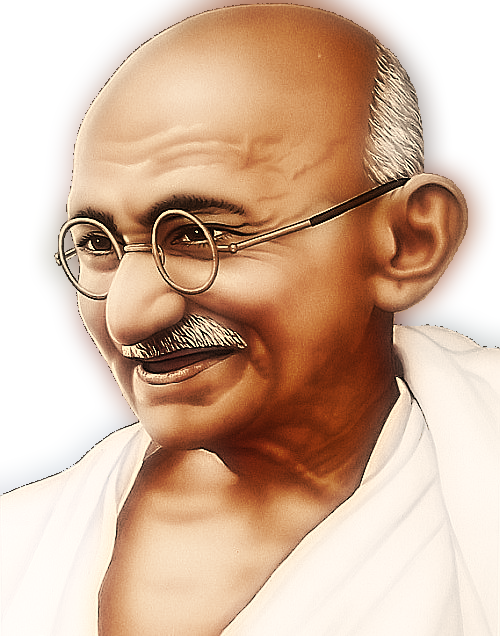

Father of the Nation – India 🇮🇳
Mahatma Gandhi, also known as Mohandas Karamchand Gandhi, was the leader of India’s freedom struggle and the pioneer of non-violence and truth.

Mahatma Gandhi was born on 2 October 1869 in Porbandar, Gujarat. His father, Karamchand Gandhi, was the Diwan of Porbandar, and his mother Putlibai was a deeply religious woman.
Gandhi studied law in London and later went to South Africa, where he faced racial discrimination. This experience transformed him into a leader who believed in truth (Satya) and non-violence (Ahimsa).
After returning to India, he led major movements like the Non-Cooperation Movement, Civil Disobedience Movement, and Quit India Movement. His simple lifestyle and moral strength inspired millions.
| Year | Event |
|---|---|
| 1869 | Born in Porbandar |
| 1888 | Went to London to study Law |
| 1893 | Went to South Africa |
| 1915 | Returned to India |
| 1920 | Non-Cooperation Movement |
| 1930 | Dandi March |
| 1942 | Quit India Movement |
| 1947 | India became Independent |
| 1948 | Assassinated in Delhi |